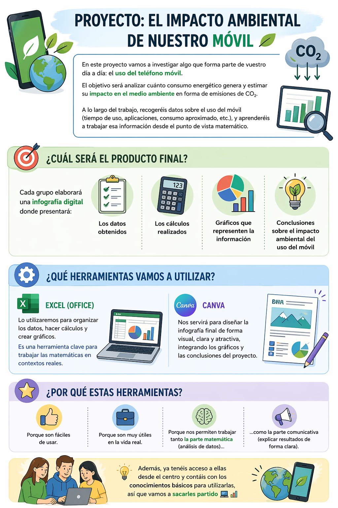

Nuestro proyecto en una imagen
Elabora una infografía final sobre el impacto del móvil, incluyendo datos, cálculos matemáticos, gráficos y una conclusión sobre el CO₂, utilizando herramientas digitales.
Consulta la imagen para conocer todas las indicaciones y requisitos: puedes ampliarla pulsando la lupa.

¿Qué tenemos que hacer?
- Duración
- 4 Clases
- Agrupamiento
- 4
Presentación y descripción del proyecto
Enlace: Proyecto 3ºESO- 👉 “Pulsa aquí ” ¿Cuánto contamina nuestro móvil?
Producto final¿Cuánto contamina nuestro móvil?
<h1 class="box-title idevice-element-in-content" data-original-title="Producto final¿Cuánto contamina nuestro móvil?" style="accent-color: rgb(11, 161, 161); border-color: rgb(216, 218, 229); border-style: solid; border-width: 1px; border-image: none 100% / 1 / 0 stretch;">Producto final¿Cuánto contamina nuestro móvil?</h1>
En este proyecto vamos a investigar algo que forma parte de vuestro día a día: el uso del teléfono móvil. El objetivo será analizar cuánto consumo energético genera y estimar su impacto en el medio ambiente en forma de emisiones de CO₂.
A lo largo del trabajo, recogeréis datos sobre el uso del móvil (tiempo de uso, aplicaciones, consumo aproximado, etc.), y aprenderéis a trabajar esa información desde el punto de vista matemático.
👉 ¿Cuál será el producto final?
Cada grupo elaborará una infografía digital donde presentará:
- Los datos obtenidos
- Los cálculos realizados
- Gráficos que representen la información
- Conclusiones sobre el impacto ambiental del uso del móvil
👉 ¿Qué herramientas vamos a utilizar?
- Excel (Office):
Lo utilizaremos para organizar los datos, hacer cálculos y crear gráficos. Es una herramienta clave para trabajar las matemáticas en contextos reales. - Canva:
Nos servirá para diseñar la infografía final de forma visual, clara y atractiva, integrando los gráficos y las conclusiones del proyecto.
👉 ¿Por qué estas herramientas?
Porque son fáciles de usar, muy útiles en la vida real y nos permiten trabajar tanto la parte matemática (análisis de datos) como la parte comunicativa (explicar resultados de forma clara).
Además, ya tenéis acceso a ellas desde el centro y contáis con los conocimientos básicos para utilizarlas, así que vamos a sacarles partido 💻📊
Lectura facilitada
n este proyecto vamos a investigar algo que forma parte de vuestro día a día: el uso del teléfono móvil. El objetivo será analizar cuánto consumo energético genera y estimar su impacto en el medio ambiente en forma de emisiones de CO₂.
A lo largo del trabajo, recogeréis datos sobre el uso del móvil (tiempo de uso, aplicaciones, consumo aproximado, etc.), y aprenderéis a trabajar esa información desde el punto de vista matemáti
👉 ¿Cuál será el producto final?
Cada grupo elaborará una infografía digital donde presentará:
Los datos obtenidos
Los cálculos realizados
Gráficos que representen la información
Conclusiones sobre el impacto ambiental del uso del móvil
👉 ¿Qué herramientas vamos a utilizar?
Excel (Office):
Lo utilizaremos para organizar los datos, hacer cálculos y crear gráficos. Es una herramienta clave para trabajar las matemáticas en contextos reales.
Canva:
Nos servirá para diseñar la infografía final de forma visual, clara y atractiva, integrando los gráficos y las conclusiones del proyecto.
👉 ¿Por qué estas herramientas?
Porque son fáciles de usar, muy útiles en la vida real y nos permiten trabajar tanto la parte matemática (análisis de datos) como la parte comunicativa (explicar resultados de forma clara).
Además, ya tenéis acceso a ellas desde el centro y contáis con los conocimientos básicos para utilizarlas, así que vamos a sacarles partido 💻📊